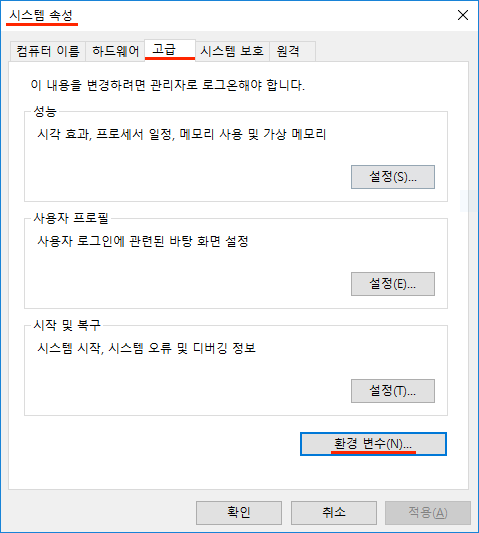
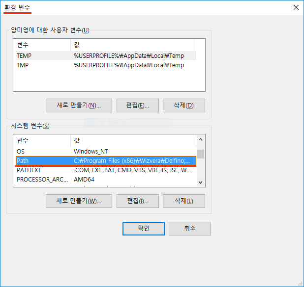
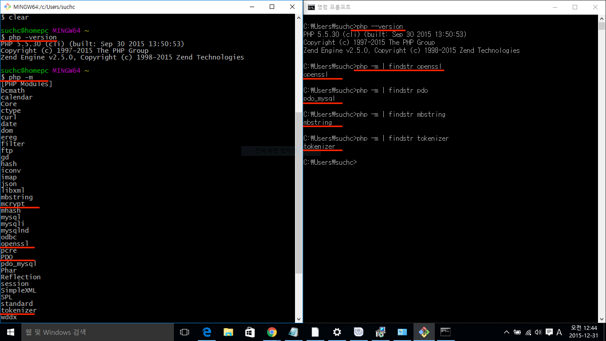
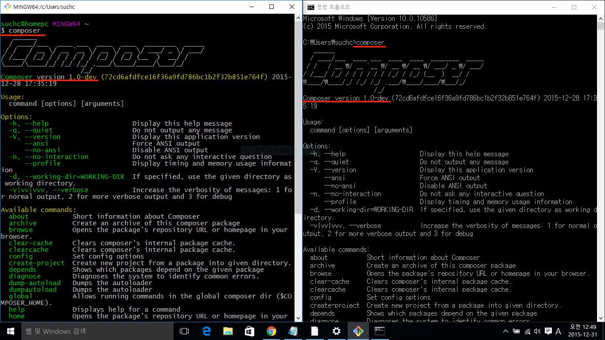
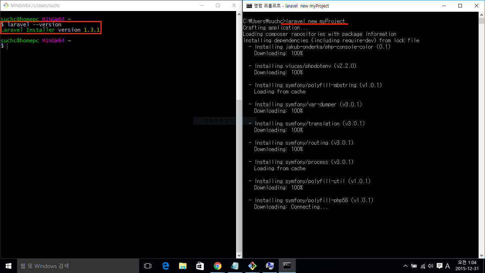
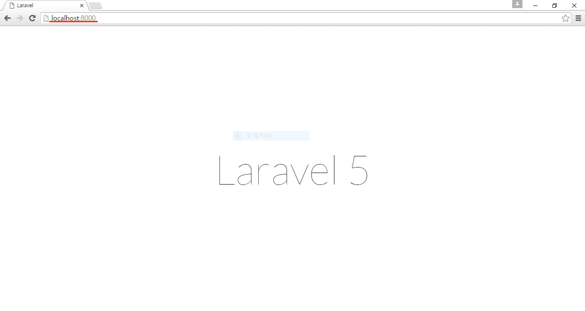

2강 - 라라벨 5 설치하기 (on Windows)
Windows 사용자라면 Mac 으로 전환할 것을 권장한다. 필자는 10년도 훨씬 전에 Windows Server 2000 트랙에서 MCSE 였었다. 무려 6 주에 걸쳐 매주 한 과목씩 총 6 과목을 시험을 봐야 했었다. 예전엔 Windows 밖엔 쓸 줄 몰랐단 얘기다.
어쨌든 시간이 지나면서 여러 OS 를 경험하고 난 후 필자가 느낀 바는 Windows 는 개인용 PC 운영체제로 나쁘지 않다는 점이다. 서버 운영체제로 쓸 때도 나쁘지 않다. 헌데 개발자 용으로 쓸 때 Windows 는 Mac 대비 생산성 측면에서 아주아주아주 별로다. 특히, 콘솔. 아래 그림은 캘리포니아의 어느 개발자 컨퍼런스 모습인데.. 아마 Windows 가 대세인 한국에서 다양한 개발 생산성 도구들을 개발했다면 아래 그림은 완전 역전되었을 지도 모르겠다.

개발 환경 셋업
시작하기 전에.. 사용자 계정이 한글이거나, 영문이더라도 사용자 계정에 공백이 있다면 반드시 새로운 사용자 계정을 만들고 아래 과정을 수행하시기 바란다.
홍길동 (x), user name (x), username (o)
[이 코스에서 사용] 로컬 개발 환경
Windows 사용자에게도 2가지 옵션이 있다. 로컬 PC를 개발 머신으로 쓰거나, 다음 절에 설명하는 Homestead 를 쓰는 방법이다.
이 코스에서는 로컬 PC를 개발환경으로 쓰는 것을 가정하고 설명한다. 로컬 PC에 PHP, Mysql 이 설치되어 있지 않다면 Bitnami Wamp 를 이용해 설치하자.
Bitnami 를 이용해 설치한 PHP 실행기가 OS 환경변수에 등록되어 있지 않으므로 등록해 주어야 한다. 제어판 -> 시스템 -> 고급 -> 시스템 변수 또는 환경 변수에서 Path 부분을 찾은 다음, PHP 실행기의 경로를 등록한다. 필자의 경우 C:\Bitnami\wampstack-5.5.30-0\php 을 등록하였다. 열려 있던 코맨드 프롬프트 창이 있다면, 재 실행 해 주어야 방금 변경한 환경설정의 적용된다는 것을 꼭 기억하자.


그리고, 코맨드 프롬프트 대체 프로그램인 Git Bash 를 설치하자.
[OPTIONAL] 공짜로 쓰는 개발 서버 "Homestead"
개발팀 구성원들이 동일한 개발 환경을 가지기 위해서, 또는 Production 과 유사한 환경에서 개발하기 위해서 Homestead 사용을 권장한다. Homestead 는 위에서 언급한 필요 확장 모듈이 기본 설치되어 있다.
설정법은 꽤나 까다로우니 Homestead 설치 (on Windows) 를 참고하자.
라라벨이 동작하기 위한 PHP 버전 및 필요 모듈 조건 확인
라라벨을 설치하려는 개발환경 또는 서버가 아래 필요사항을 충족하는 지 확인한다.
- php 5.5.9 이상
- php Extensions
- OpenSSL
- PDO
- Mbstring
- Tokenizer
# Git Bash
$ php --version # PHP 5.5.30
$ php -m # Git Bash 에서는 파이프 (`|`) 연산자가 먹지 않아 `grep` 명령을 쓸 수 없다.
# Windows Command Prompt
\> php --version # PHP 5.5.30
\> php -m | findstr openssl
\> php -m | findstr pdo
\> php -m | findstr mbstring
\> php -m | findstr tokenizerBitnami Wamp 를 설치했다면 모두 설치되어 있을 것이다. 이미 PHP, Mysql 이 설치되어 있었던 경우에, 필요한 모듈 중 하나라도 빠진게 있다면 구글링해서 설치하자~

이제 라라벨을 설치해 보자.
라라벨 인스톨러를 사용할 것을 권장한다. 왜냐하면 Composer 를 이용해 설치하는 것 보다 훨~씬 빠르니까...
먼저, Composer 가 필요하다. 왜냐하면, 라라벨 인스톨러가 Composer 를 통해 배포되기 때문이다. 윈도우즈용 Composer 인스톨러를 다운로드 받아 설치하자. 설치 중에 PHP 경로를 물어본다면, 앞 절에서 설정한 경로로 찾아 들어가서 PHP 실행기를 선택해 준다.
\> composer --version # Composer version 1.xx
이제 Composer 를 이용해서 라라벨 인스톨러를 설치한다.
\> composer global require "laravel/installer"laravel 코맨드를 어디서든 접근할 수 있게 Path 환경변수를 설정하자. 필자의 경우 C:\Users\{username}\AppData\{Local|Roaming}\Composer\vendor\bin 을 등록하였다. 환경 변수가 변경되었으면, 열려 있던 콘솔 창을 재 실행해 주어야 한다.
\> laravel --version # Laravel Installer version 1.2.1휴~, 이제 설치를 위한 준비가 완료되었다. 라라벨 인스톨러로 라라벨 5를 설치하자.
\> laravel new myProject
\> cd myProject
\> php artisan --version # Laravel Framework version 5.x
서버를 부트업하고, 라라벨을 시작해 보자!
# 로컬 서버를 부트한다.
\> php artisan serve # 종료하기 ctrl+c
# Laravel development server started on http://localhost:8000/브라우저에서 http://localhost:8000 페이지를 방문해서 'Laravel 5' 란 글씨가 써진 화면이 보인다면, 성공적으로 설치한 것이다.

참고 artisan 은 라라벨의 코맨드 라인 툴이다. \> php artisan 을 실행한 후, 설명을 쭈욱~ 한번 살펴보자. 개발 중에 코드 에디터와 콘솔을 오가면서, artisan 코맨드를 많이 사용하게 될 것이다.
프로젝트의 디렉토리 구조와 라라벨의 동작 시퀀스 다이어그램은 Mac 용 설치 문서 "2강 - 라라벨 5 설치하기"를 참조하자.